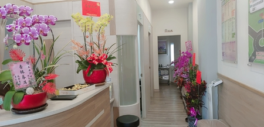

關於我們
禾安診所
禾安診所為林獻鋒院長於民國109年9月所創立之家庭醫學科診所，家庭醫學科，故名思義，就是提供以家庭為單位的健康照顧。家庭醫師會與病人及其家庭維持良好的醫病關係─像朋友；處理一家大小常見的健康問題，不論性別，年齡，或是身體、心理，甚至人際關係方面─像身心健康顧問；推廣及執行疾病的預防及保健工作，強調健康信念及行為─像教育者；將醫療服務，包括社區資源，各級醫療單位，會診及轉診制度作有效的應用─協調整合者。
林獻鋒院長於醫學中心接受完整的家庭醫學訓練，取得家庭醫學專科醫師資格後，持續於醫學中心從事服務、教學及研究之工作，陸續取得職業醫學和老年醫學專科醫師資格，也是糖尿病共同照護網、戒菸、口腔癌篩檢、癌症篩檢的認證醫師，學識專精淵博，對待患者親切，視病猶親，曾獲得醫學中心的優良醫師和傑出醫師之獎項。
分級醫療
診所就醫好處
到醫學中心看病幾乎都要花半天的時間(掛號+看診+檢查+批價+領藥)，林獻鋒院長是從醫學中心訓練出來的，專業知識與服務不輸給大醫院，如果身體有不適，建議不要往醫學中心跑，應該要就近選擇診所或基層院所，不但省錢，而且速度又快。一般來說，診所的掛號費加上部份負擔大概在200元左右，但醫學中心看病收費是診所的2-3倍，除非是要開刀或做特殊檢查，否則多數問題都可以在診所解決。如果在診所檢查出的問題需要更精密的儀器檢查，醫師會建議你轉至大醫院就診，這時候醫師會開一張「轉診單」，持此轉診單至大醫院就診，也可以減免醫療費用，更重要的是轉診單上會詳述病情與建議處置 ，讓病患更容易找到適合的醫師處理問題。
診所環境與空間
